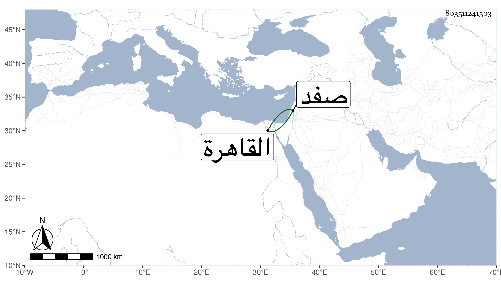

0902Sakhawi.DawLamic.ITO20230111-ara1.EIS1600.803511241503
Biography ID: 803511241503
938
عبد اللطيف بن محمد بن محمد بن محمد بن محمود أوحد الدين بن أبي الفضل ابن الشحنة أخو المحب محمد والوليد الآتيين ، ولد سنة ثمان وثمانين وسبعمائة وتفقه بأبيه والبدر بن سلامة ، ودخل القاهرة فأخذ بها عن قارئ الهداية والعز عبد السلام البغدادي وأذن له وولي قضاء صفد مرارا وناب في القاهرة عن التفهني ومات بها في الطاعون سنة ثلاث وثلاثين ، أفاده أخوه المحب محمد .
